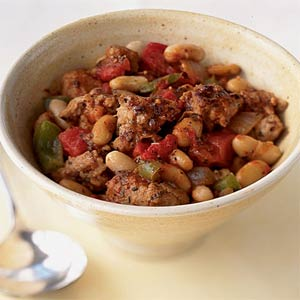

Italian Sausage and White Beans

Savory Italian sausage and beans combine for a quick and easy weeknight meal. If you're lucky, you'll have some leftovers for next day's lunch.
Ingredients
- 12 ounces sweet or spicy Italian sausage
- 1 tablespoon of olive oil
- 1/2 cup chopped green bell pepper
- 1/2 cup chopped onion
- 1/2 teaspoon bottled minced garlic
- 1 teaspoon dried oregano
- 1 teaspoon dried basil
- 1 (19-ounce) can cannellini beans or other white beans, drained
- 1 (14.5-ounce) can diced Italian-style tomatoes, undrained
Preparation
- Remove casings from sausage.
- Heat a large nonstick skillet coated with olive oil over medium-high heat.
- Add bell pepper, onion, and garlic; sauté 3 minutes.
- Add sausage, and cook 8 minutes, or until browned, stirring to crumble.
- Stir in oregano and remaining ingredients; reduce heat to medium-low.
- Cook 5 minutes or until thoroughly heated.
>
So much flavor from such a simple recipe, pairing it with a simple salad makes a great meal.